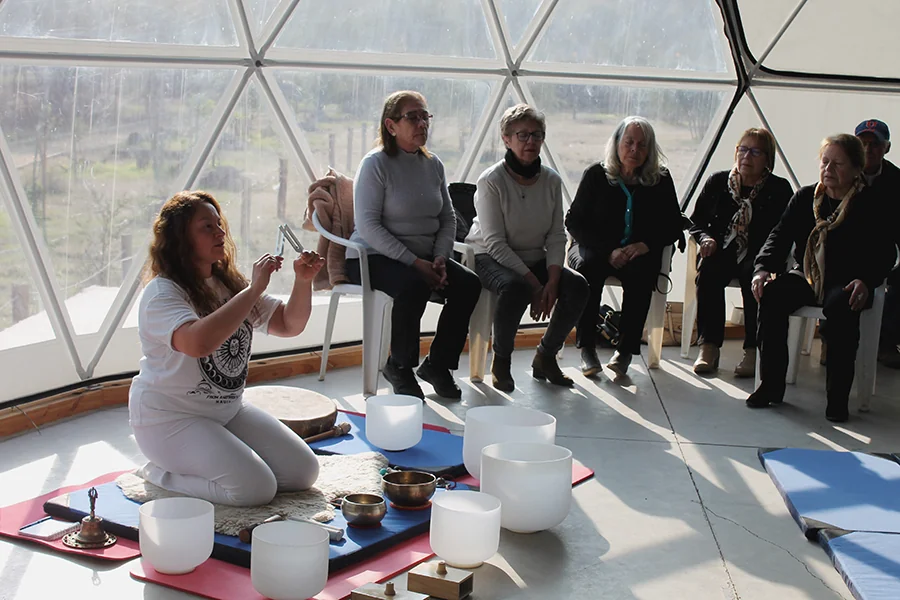
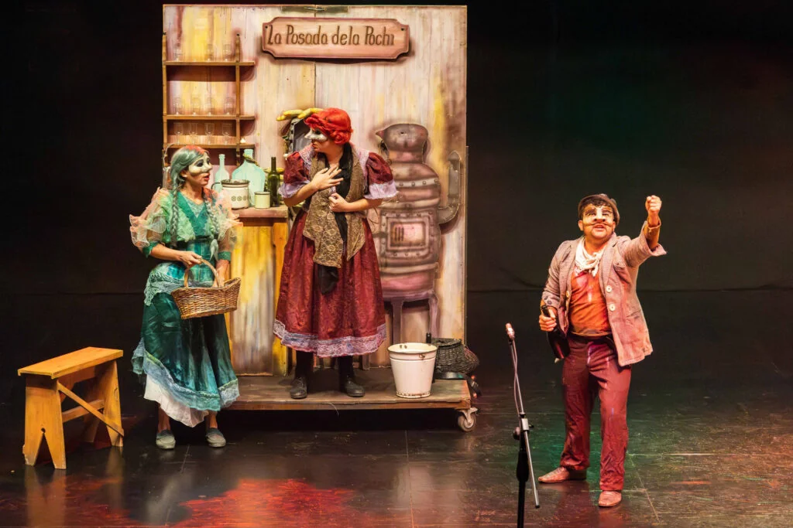
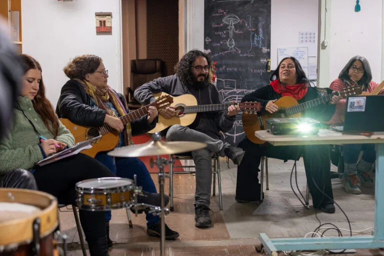
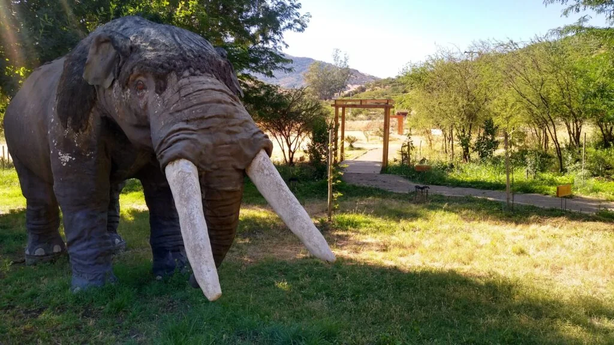

Imagen pendiente de recuperación
CIERRE DE VACACIONES DE INVIERNO JUNTO AL HOGAR DE PENCAHUE Y EL ARTE DEL CIRCO
Durante el fin de semana recién pasado celebramos el fin de las vacaciones de invierno en el Domo Cultural Añañuca…
14/07/2025Durante el fin de semana recién pasado celebramos el fin de las vacaciones de invierno en el Domo Cultural Añañuca…
14/07/2025
Agradecemos a quienes pudieron ser parte el pasado sábado 21 de junio del concierto interactivo y exposición de ilustraciones del…
24/06/2025
Actividad de bienestar para adultos mayores realizado el martes 29 de abril en el domo cultural de Fundación Añañuca.
08/05/2025
Mesa de diálogo denominada “Danza, Cuerpo y Territorio”
04/05/2025
“El misterioso nacimiento de un Tue tué” se trata de una obra fresca y liviana que coloca en valor la…
27/01/2025
Con el fin de visibilizar aquellos actores relevantes en nuestro territorio hemos realizado una serie de capsulas audiovisuales con enfoque de…
25/01/2025
Disponemos de una Escuela Comunitaria que lleva programas educativos y artísticos a sectores rurales y comunidades con acceso limitado a…
09/01/2025
“Décimas por la Memoria” es una expresión artística y comunitaria profundamente significativa, nacida del esfuerzo conjunto de pobladores, educadores y…
20/09/2024
Jardín Etnobotánico Taguatagua es un proyecto de Fundación Añañuca, y que recibe financiamiento del Concurso Ciencia Pública 2021-2022 del Ministerio de…
20/12/2022«El Buen Vivir» es un proyecto de Mediación artística cultural con Ecoescuela Artística Itinerante Kalfumalén, en el cual compartimos con…
14/04/2022